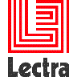
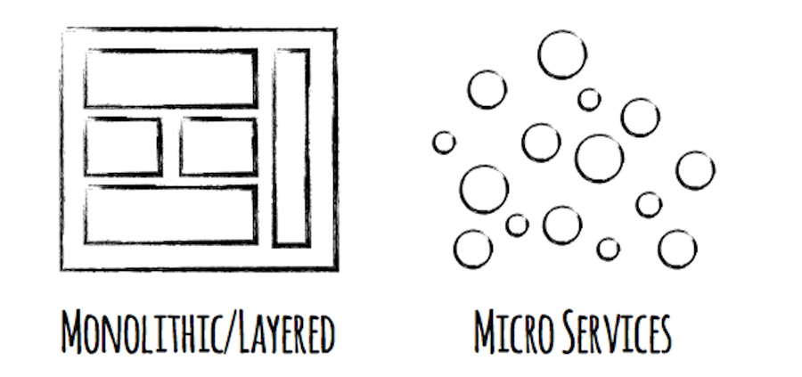
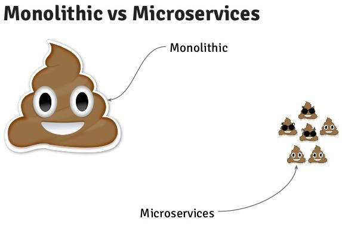
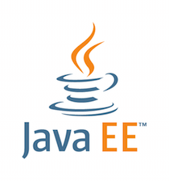
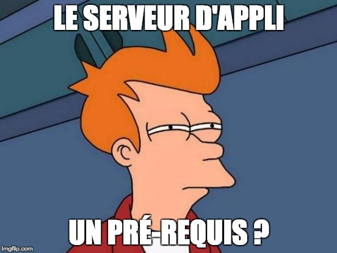
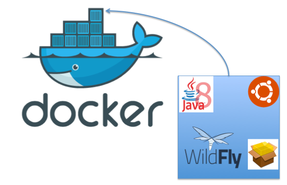
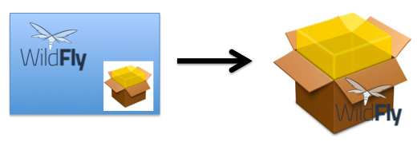
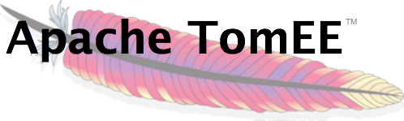
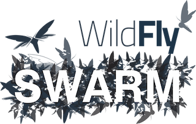
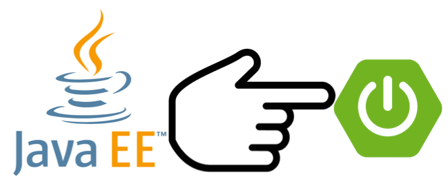

Micro JavaEE
Benoit Priouxbenoit.prioux@gmail.com
Me
@binout
https://github.com/binout
- Développeur Java depuis 10 ans
- Membre du Bordeaux JUG

- Commiteur Asciidoctor

- Technical Leader chez Lectra, numéro un mondial des solutions dédiées à l’industrie du textile (machines et logiciels)
Micro Services

Micro Services

JavaEE vs JEE
Depuis JavaEE5, il n’y a pas que le nom qui a changé …

Principes de JavaEE :
- Convention over Configuration
- Productivité
- Modularité
- Simplification
JavaEE : monolithique ?
Micro Services : les caractéristiques
Caractéristique 1
Un seul livrable, à partir d’un seul code sourceLe touilleur express
Le WAR est un livrable standard, qui peut être très léger
Caractéristique 2
Connecté sur le réseau et expose une API RESTLe touilleur express
JAX-RS est très facile à utiliser pour développer une API REST
Caractéristique 3
Embarque ses propres solutions techniques, et intègre l’ensemble des couches logicielles (de l’UI à la persistence)Le touilleur express
JPA + CDI + JAX-RS (+JSF?), tout ce qu’il faut dans le standard
Caractéristique 4
Industrialisé pour se déployer automatiquement dès lors que les tests unitaires et d’intégrations fonctionnentLe touilleur express
Arquillian, le framework de test d’intégration JavaEE
JavaEE AND Micro Services
Caractéristique 5
Une application autonome avec son environnement d’exécution, son propre cycle de vieLe touilleur express
Euh… bah un WAR doit se déployer dans un serveur d’application …
FAIL ?

Docker
- Image avec : Serveur d’Application + WAR

Embedded
- Plus besoin de pré-requis, le serveur d’application est embarqué.

- Même code source que pour un packaging war
- Démarre en une ligne de commande :
java -jar my-app-in-application-server.jarTomEE Maven Plugin

mvn tomee:exec génère un jar avec à l’intérieur un TomEE ready to run
java -jar my-app-in-tomee.jardézippe TomEE localement et déploie l’application.
Payara
Payara Micro, un bootstrap de 50 Mo
pour déployer un war dans un Glassfish embedded.
java -jar payara-micro.jar --deploy test.warWildfly Swarm

Wildfly Swarm permet de construire un fat jar de son application
avec un Wildfly custom embedded.
java -jar myapp-swarm-jarDémo
Merci

/